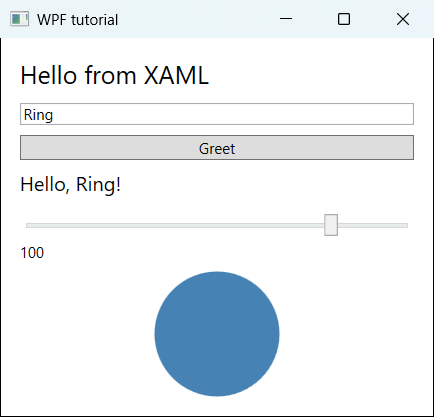

Tutorial 15: WPF
WPF is the newer Windows UI framework. A window is described in XAML, a text format of elements and attributes; this lesson loads a XAML window, reacts to events and binds a slider to a text.
What you will learn#
- the difference between WPF and Windows Forms,
- XAML,
- finding elements by name,
- events,
- data binding.
WPF and Windows Forms#
| Windows Forms | WPF | |
|---|---|---|
| Layout | positions in pixels | panels that arrange their children (StackPanel, Grid) |
| Description | code only | XAML text or code |
| Look | classic Windows controls | any look: shapes, brushes, animation |
| Best for | simple tools, quick results | modern, scalable UIs |
Both work from Ring with the same ideas: objects, properties, events.
The program#
# Tutorial 15: WPF - describe the window in XAML, find elements by name, bind a slider to a text
load "dotnet.ring"
using {
"System.Windows"
"System.Windows.Controls"
"System.Windows.Controls.Primitives"
"System.Windows.Media"
"System.Windows.Shapes"
"System.Windows.Data"
"System.Windows.Threading"
"System"
}
oWindow = ""
oSlider = ""
oShape = ""
oValue = ""
oGreet = ""
oNameBox = ""
func main
# 1. The window is described in XAML: a text format of elements and attributes
cXaml = '<Window xmlns="http://schemas.microsoft.com/winfx/2006/xaml/presentation" xmlns:x="http://schemas.microsoft.com/winfx/2006/xaml" Title="WPF tutorial" Width="360" Height="340">'
cXaml += '<StackPanel Margin="15">'
cXaml += '<TextBlock FontSize="20" Text="Hello from XAML"/>'
cXaml += '<TextBox x:Name="nameBox" Margin="0,10,0,0" Text="Ring"/>'
cXaml += '<Button x:Name="greet" Content="Greet" Margin="0,8,0,0"/>'
cXaml += '<TextBlock x:Name="greeting" FontSize="16" Margin="0,8,0,0"/>'
cXaml += '<Slider x:Name="size" Minimum="20" Maximum="120" Value="60" Margin="0,14,0,0"/>'
cXaml += '<TextBlock x:Name="sizeText" Margin="0,4,0,0"/>'
cXaml += '<Ellipse x:Name="circle" Fill="SteelBlue" Width="60" Height="60" Margin="0,8,0,0"/>'
cXaml += '</StackPanel></Window>'
oWindow = wpfXaml(cXaml)
# 2. Find the elements by their x:Name
oNameBox = wpfFind(oWindow,"nameBox")
oGreet = wpfFind(oWindow,"greeting")
oSlider = wpfFind(oWindow,"size")
oValue = wpfFind(oWindow,"sizeText")
oShape = wpfFind(oWindow,"circle")
# 3. Events work like Windows Forms events
wpfFind(oWindow,"greet").setClickEvent("oGreet.Text = 'Hello, ' + oNameBox.Text + '!'")
# 4. Data binding: the text follows the slider, with no code at all
oBinding = new WpfBinding().New_([ :path = "Value" ])
oBinding.Source = oSlider
oValue.SetBinding(oValue.TextProperty,oBinding)
# 5. Events can also change other elements: the circle follows the slider
oSlider.setValueChangedEvent("oShape.Width = oSlider.Value oShape.Height = oSlider.Value")
wpfTest(oWindow,"selfTest()")
wpfRun(oWindow)
wpfEnd()
func selfTest
wpfFind(oWindow,"greet").RaiseEvent(new RoutedEventArgs().New_([ :routedEvent = new WpfButtonBase().ClickEvent ]))
dnAssert("greeting",oGreet.Text,"Hello, Ring!")
oSlider.Value = 100
dnAssert("binding",oValue.Text,"100")
dnAssert("the circle follows the slider",oShape.Width,100)
SELFTEST OK (3 checks)How it works#
XAML#
XAML is XML where each element is a WPF object and each attribute is a property:
<"t">class="k">Button "t">x:Name="greet" "t">Content="Greet" "t">Margin="0,8,0,0"/>means "a Button, named greet, with the content Greet, and a margin on top". <StackPanel> is a panel that stacks its children vertically. The Window element is the window. The program builds the XAML text and calls wpfXaml(text), which creates all the objects.
WPF has classes with the same names as Windows Forms ones. In RingDotNet the WPF version of a clashing name starts with Wpf: WpfButton, WpfTextBox, WpfBinding. The others keep their name (Window, Slider, Ellipse).
Finding elements#
x:Name="nameBox" gives an element a name; wpfFind(oWindow,"nameBox") returns the object. Keep the ones you need in global variables.
Events#
setClickEvent("code") works as in Windows Forms. setValueChangedEvent runs when the slider moves; here it sets the width and height of the circle from oSlider.Value.
Data binding#
A binding connects a property of one element to a property of another, with no code in between:
oBinding = new WpfBinding().New_([ :path = "Value" ]) # the property to follow: Value
oBinding.Source = oSlider # whose property
oValue.SetBinding(oValue.TextProperty,oBinding) # the Text of this block follows itMove the slider and the text changes by itself. In the test: oSlider.Value = 100, then the text is 100.
Running#
wpfRun(oWindow) shows the window and waits. wpfTest and wpfEnd are the self-test helpers, like uiTest and uiEnd.
What you learned#
- WPF windows can be described in XAML,
wpfXaml,wpfFind,wpfRun,- events work as before,
- bindings keep elements in sync without code.
Exercises#
- Add a
CheckBoxnamedshoutand make the greeting upper case when it is ticked. - Add a
ProgressBarand bind itsValueto the slider as well. - Change the circle's colour with a second slider (
Brush). - See the WPF samples for shapes, grids, menus, tabs and timers.